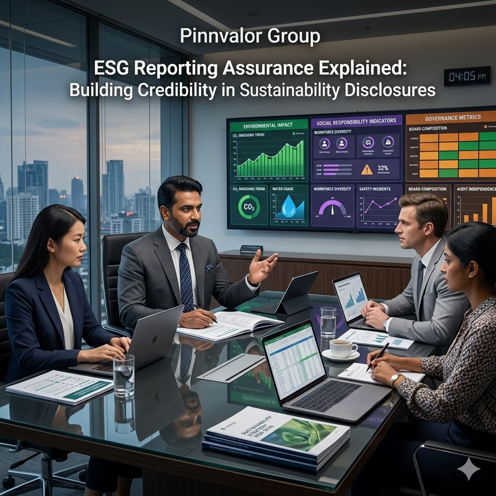

ESG Reporting Assurance Explained: Building Credibility in Sustainability Disclosures
Environmental, Social, and Governance (ESG) reporting has rapidly evolved from a voluntary disclosure practice into a core expectation for investors, regulators, and stakeholders. However, as ESG data becomes increasingly central to decision-making, one critical question arises—can this information be trusted?
What makes ESG data worthy of investor confidence?
Green promises alone don’t build credibility—validated numbers do. ESG assurance bridges the gap between corporate intent and stakeholder confidence.
This is where ESG Reporting Assurance plays a transformative role. It enhances the credibility, reliability, and transparency of sustainability disclosures, ensuring that ESG reports are not just narratives but verified, decision-useful information.
What is ESG Reporting Assurance?
ESG Reporting Assurance refers to the independent evaluation of sustainability and non-financial disclosures to assess whether they are accurate, complete, and aligned with applicable reporting frameworks.
It typically covers key ESG areas such as:
- Carbon emissions and climate impact reporting
- Workforce diversity and inclusion metrics
- Health and safety performance indicators
- Corporate governance practices
- Supply chain sustainability data
The objective is to provide stakeholders with confidence that ESG information is free from material misstatement and bias.
Why ESG Assurance is Becoming Essential
1. Investor Pressure
Institutional investors increasingly rely on ESG metrics for risk assessment and capital allocation. Unverified ESG data can distort investment decisions and increase financial risk exposure.
2. Regulatory Requirements
Governments and regulatory bodies are moving toward mandatory sustainability reporting and assurance requirements, especially for listed and large companies.
3. Greenwashing Concerns
Without assurance, companies may overstate sustainability achievements, leading to reputational damage and regulatory scrutiny.
4. Stakeholder Trust
Customers, employees, and partners now expect transparency in ESG performance. Assurance strengthens credibility and long-term trust.

Types of ESG Assurance Engagements
Limited Assurance
- Provides moderate level of confidence
- Involves analytical procedures and inquiries
- Results in negative assurance conclusion
Reasonable Assurance
- High level of confidence (similar to financial audit)
- Includes detailed testing and verification
- Provides positive assurance opinion
Most organizations begin with limited assurance and gradually progress toward reasonable assurance maturity.
Frameworks Used in ESG Assurance
- ISAE 3000 (Revised) – Assurance engagements other than financial audits
- AA1000 Assurance Standard – Focus on inclusivity, materiality, responsiveness
- GRI Standards – Global ESG reporting framework
- ISSB Standards (IFRS S1 & S2) – Emerging global sustainability baseline
Key Areas Reviewed in ESG Assurance
- Data Accuracy: Verification of ESG metrics such as emissions and workforce data
- Completeness: Ensuring all material ESG issues are disclosed
- Internal Controls: Assessment of ESG data collection systems
- Methodology Consistency: Checking alignment with standards
- Materiality: Evaluating relevance of reported ESG issues
Challenges in ESG Reporting Assurance
1. Lack of Standardization
Different ESG frameworks create inconsistencies in reporting and comparability.
2. Data Quality Issues
ESG data often comes from multiple systems, increasing risk of errors and inconsistencies.
3. Forward-Looking Estimates
Targets like carbon neutrality involve assumptions that are difficult to verify.
4. Evolving Regulations
Rapidly changing ESG rules create compliance uncertainty for organizations.
Benefits of ESG Reporting Assurance
- Improved investor confidence and capital access
- Stronger brand reputation and trust
- Reduced greenwashing risk
- Better internal governance and data control
- Improved decision-making quality
ESG assurance transforms sustainability reporting from a narrative exercise into a structured accountability framework.
The Future of ESG Assurance
ESG assurance is expected to evolve significantly in the coming years with key developments such as:
- Mandatory assurance for listed companies
- Integration of ESG with financial audits
- Use of AI and analytics for real-time ESG tracking
- Global convergence of sustainability standards
As ESG becomes central to corporate strategy, assurance will become a core pillar of governance and transparency.
Conclusion
ESG Reporting Assurance plays a critical role in strengthening the credibility of sustainability disclosures. It ensures that ESG data is not only reported but trusted by investors, regulators, and stakeholders.
In today’s evolving business landscape, ESG assurance is no longer optional—it is a foundation for transparency, accountability, and long-term value creation.